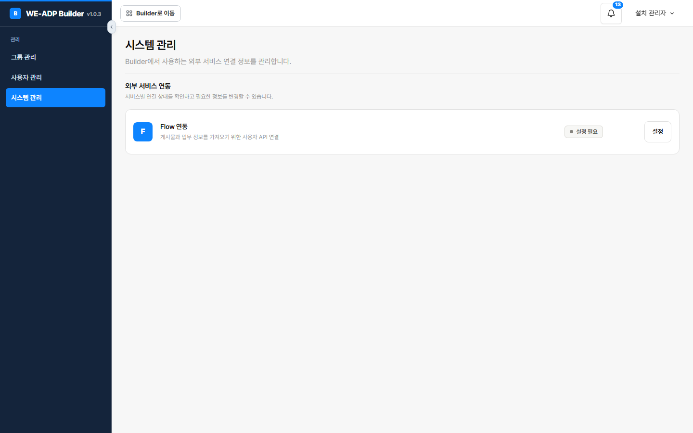

Platform
Flow integration
Reference documentation —
docs/adp/. Describes the system as built, not as planned. The code is the source of truth; this file points at it. Verified against the tree on 2026-09-17. Flow is an external collaboration tool. Builder reads posts out of it; it never writes back.
1. What this is
Builder can pull a work request straight out of Flow instead of making someone retype it. One API key serves the whole installation, and two features consume it.
| Direction | Read only. Builder fetches posts; nothing is ever sent to Flow |
| Credential | One key for the entire Builder installation — not per project, not per person |
| Where the key lives | Sealed in the database, registered through a screen. ⛔ Never in a configuration file |
| Consumers | SRT fast track registration, and DocumentType.FLOW on received documents — see Intake & doc reading |
| If unconfigured | Only the Flow paths close. Everything else works, and the server starts normally |
⚠ The two halves live in different packages. com.bizplay.builder.flow owns the key (four files: the admin screen, the record, the mapper, the service). com.bizplay.builder.intake owns the fetch (FlowPostGateway, HttpFlowPostGateway, FlowPost, FlowPostException). The split is why this page exists: neither package tells the whole story.
2. The System Management screen
The third admin menu, after Group Management and User Management.
| Menu | Admin → System Management |
| Route prefix | /admin/system |
| Authorization | @PreAuthorize("hasRole('SUPER')") on the whole controller |
| Template | admin/system.html |
| Action | Method + route |
|---|---|
| View status | GET /admin/system |
| Save or replace the key | POST /admin/system/flow |

The screen never shows the key back. FlowApiKeyService.status() returns only (configured, updatedAt, updatedBy) — a boolean and an audit trail, never the secret. The controller resolves updatedBy to a person's name through AccountMapper, falling back to 확인할 수 없음 when that account no longer resolves.
Replacing means retyping the whole key. There is no partial edit, because there is nothing to edit against — the stored value is ciphertext.
Success redirects, failure does not. A saved key sets a flash message and redirects (redirect:/admin/system); a rejected one re-renders admin/system directly with the error, so the operator's typed input survives. Same pattern as the Group Management dialogs — see Project setup.
What a key must look like
FlowApiKeyService.save rejects three things, each with its own message:
| Rule | Message |
|---|---|
| Not blank after trimming | Flow API 키를 입력해 주세요. |
| At most 500 characters | Flow API 키는 500자 이하로 입력해 주세요. |
Every character printable ASCII (0x21–0x7E) | Flow API 키에 공백이나 한글이 섞여 있습니다. 발급받은 키를 그대로 붙여 주세요. |
⭐ The third rule is the useful one. It catches a key pasted with a stray space, a line break, or surrounding Korean text — the realistic paste accidents. Without it those reach the API and come back as an opaque rejection at fetch time, far from the screen where the mistake was made.
The value is then sealed with SecretSealer and upserted. See Accounts & security for the sealing scheme.
3. The gateway
FlowPostGateway is the boundary; HttpFlowPostGateway is the only implementation. It uses the JDK's built-in HttpClient — there is no HTTP client dependency in this repository, and one call site does not justify adding one.
| Base URL | builder.flow.base-url, default https://api.flow.team; trailing slashes stripped |
| Timeout | builder.flow.timeout, default 20s |
| Auth | header x-flow-api-key: <key> |
| Method | GET, Content-Type: application/json |
The key is fetched per request, not injected once. The constructor takes a Supplier<String> bound to FlowApiKeyService::apiKey, so a key replaced in the admin screen takes effect on the next call without a restart.
Every response must pass an envelope check: response.success must be true and response.data must be an object. A 2xx carrying a failure envelope is treated as a failure.
⛔ Failures never echo the provider's response. A non-2xx logs the status code alone; a parse failure logs only the exception's class name. Both then raise the same FlowPostException:
Flow 원문을 가져오지 못했습니다 — 업무번호 또는 게시물 ID와 접근 권한을 확인해 주세요.A missing key is distinguished, because the fix is different and belongs to someone else:
Flow API 연결 설정이 없습니다 — 관리자에게 문의해 주세요.4. Finding a post by business number
This is the part that is not obvious. A business number is not a post ID, and Flow offers no endpoint that maps one to the other. So getByTaskNumber searches:
GET /user/projects?cursor=N ─┐ page through every project the key can see
│ (cursor loop, guarded)
for each project: │
GET /user/posts/projects/{id}/tasks/filter?searchWord={number}
│
for each task: compare the task's own number ← exact match only
│
GET /user/posts/{postId} ─┘ fetch the real postThree details worth knowing:
- ⭐
searchWordis treated as a hint, not an answer. The gateway re-reads each returned task's own number out ofcolumns[].columnData[].customColumnDataand requires an exact match. A search that returns near-misses cannot import the wrong post. - ⚠ The cursor loop is guarded against repeating itself.
visitedCursorsis aSet<Long>, and the loop condition isvisitedCursors.add(cursor)— the moment the API returns a cursor already seen, the loop ends. Without it a provider paging bug becomes an infinite loop holding a request thread. - ⚠ The page shape is accepted two ways.
projectsis read whether the array sits at the top ofdataor nested one level down, withhasNext/lastCursorread from whichever node carried it.
Cost scales with the number of Flow projects the key can see — one request per project until the number is found. That is inherent to searching without a lookup endpoint.
Input bounds differ by entry point
| Where | Rule |
|---|---|
| Registration form | pattern="[0-9]{4,12}" maxlength="12" — a browser hint only |
SrtService.registerFlow | ^[0-9]+$, at most 30 characters |
HttpFlowPostGateway.getByTaskNumber | ^[0-9]{4,12}$ |
HttpFlowPostGateway.get (post ID) | ^[0-9]{1,15}$ |
⚠ The gateway is the binding constraint. A 20-digit number passes the SRT service's check and is then refused by the gateway with Flow 업무번호는 4~12자리 숫자로 입력해 주세요. If you are changing these bounds, change them where they actually bite.
⚠ The field takes a number, not a URL. Pasting a Flow link fails.
5. Reading the body
A Flow post's text arrives in one of two shapes, and the gateway prefers the simple one.
- If
outContentis present, that is the text. - Otherwise
contentis parsed as Flow's editor JSON, and only components whoseCOMP_TYPEisTEXTcontribute, viaCOMP_DETAIL.CONTENTS. Anything else is skipped. - If the parse fails, the raw
contentstring is used rather than losing the post.
⛔ A post with no title or no body is rejected outright — Flow 게시물에 제목이나 본문이 없습니다 — Flow에서 게시물을 확인해 주세요. An empty import would otherwise become an SRT with nothing in it, and the AI analysis downstream would have nothing to judge.
FlowPost carries postId, title, content, connectUrl, projectTitle, attachments (fileName, size, url, thumbnailUrl) and remarks (comments, excluding deleted ones).
⚠ Remarks are fetched but deliberately dropped when an SRT saves the original. See SRT fast track — the stored source_json keeps the post, not the conversation.
6. Data model
adk_builder_flow_api_key
| Column | Type | Notes |
|---|---|---|
singleton_id | smallint PK, default 1 | CHECK (singleton_id = 1) |
api_key_cipher / api_key_nonce | bytea | Meaningless apart from each other |
updated_at | timestamptz | default now() |
updated_by | varchar(7) | FK to adk_builder_account |
⭐ The single row is enforced by the database, not by convention. The primary key defaults to 1 and a CHECK forbids any other value, so a second key physically cannot be inserted — the mapper's upsert is the only sensible write. This is an installation-wide credential, and the schema says so.
7. Configuration
| Key | Default | Note |
|---|---|---|
builder.flow.base-url | https://api.flow.team | Trailing slashes stripped in the record's compact constructor |
builder.flow.timeout | 20s |
⛔ There is no builder.flow.api-key, and there must not be. The key is registered through the screen and sealed into the database. Operational context: Install & operations.
⚠ A changed builder.secret-key-base64 makes the stored key unreadable. Back up the sealing key with the database, or the Flow key must be registered again.
8. Code map
| File | Role |
|---|---|
flow/AdminSystemController.java | /admin/system, SUPER only; status and save |
flow/FlowApiKeyService.java | Validation, sealing, status(), apiKey() |
flow/FlowApiKey.java | The sealed record plus its audit fields |
flow/FlowApiKeyMapper.java | selectOne / upsert — one row by design |
config/FlowProperties.java | Base URL and timeout, with defaults |
intake/FlowPostGateway.java | The boundary: get(postId), getByTaskNumber(number) |
intake/HttpFlowPostGateway.java | JDK HttpClient, project scan, envelope check, body parsing |
intake/FlowPost.java | Post, Attachment, Remark |
intake/FlowPostException.java | Carries the operator-facing next action |
templates/admin/system.html | The screen |
9. Guarantees covered by tests
Test method names in this project are Korean sentences stating what is guaranteed, by convention.
HttpFlowPostGatewayTest — searching projects by business number retrieves an original that has attachments and comments · in editor JSON, only CONTENTS is read as the document body · a post's detail is queried with the API key and its title and body are read.
./mvnw test -Dtest='HttpFlowPostGatewayTest,Srt*Test'10. Traps
- Do not put the Flow key in a configuration file. It is registered on screen and sealed into the database; a file copy would outlive the rotation.
- Do not render the key back to the screen.
status()exposes only whether one exists and who set it. - Do not accept a key with whitespace or non-ASCII. The paste accident is real, and the failure otherwise surfaces far from its cause.
- Do not bind the key once at construction. The supplier is what lets a replacement take effect without a restart.
- Do not trust
searchWordresults. Compare each task's own number exactly, or a near-miss imports the wrong post. - Do not page without a visited-cursor guard. A repeating cursor becomes an infinite loop.
- Do not echo the provider's response into an error. Status code and exception class only.
- Do not treat 2xx as success. The envelope's
successflag anddataobject decide. - Do not import a post with no title or body. An empty SRT gives the analysis nothing to judge.
- Do not widen the business-number bounds in one place only. Four different checks apply; the gateway's
4–12is the one that actually refuses. - Do not add an HTTP client dependency for this. One call site; the JDK's is enough.